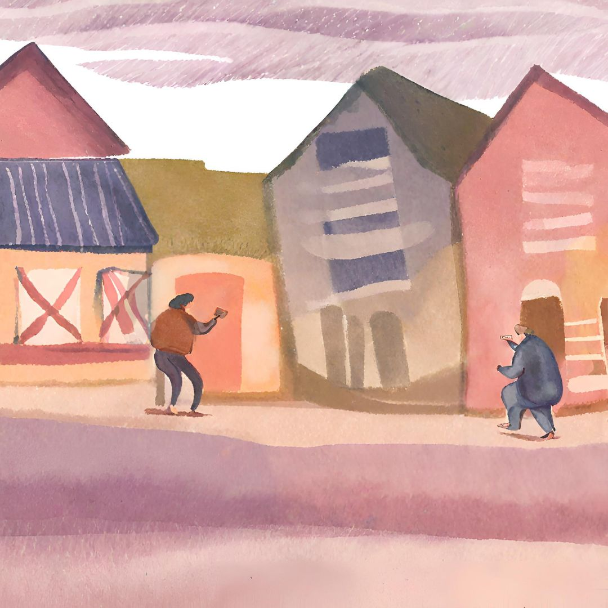

1. Investiga
1. Agrega 10 ml de conocimiento flexible sobre el tema que vas a trabajar, investiga antecedentes tanto de la teoría como la realidad del entorno que lo rodea para que sepas qué es lo que vas a preparar.
